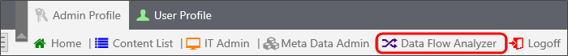
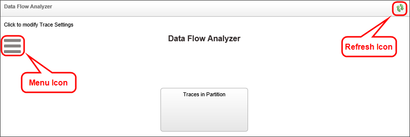
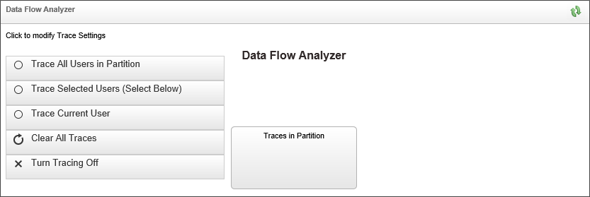
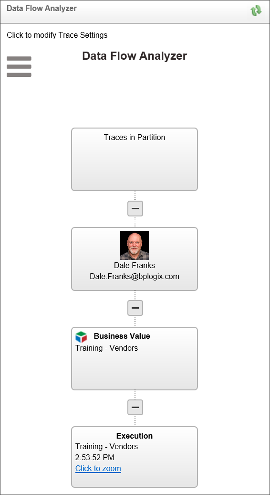
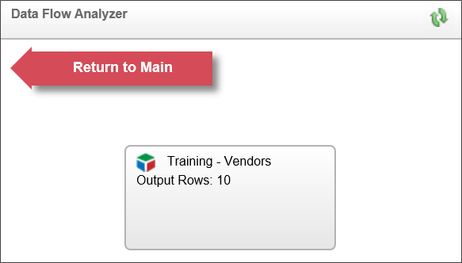
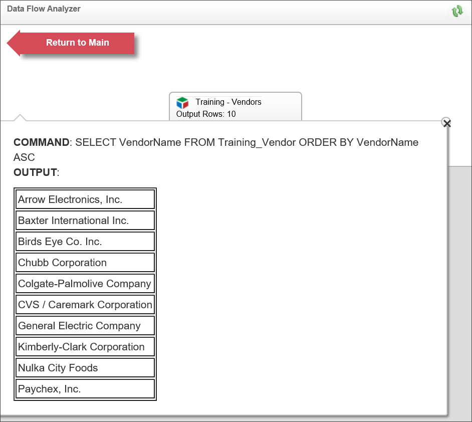
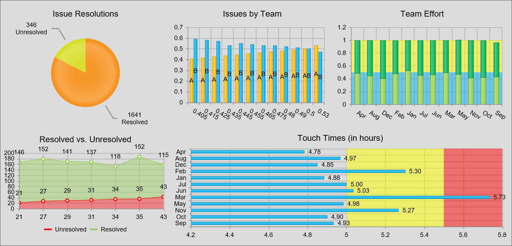
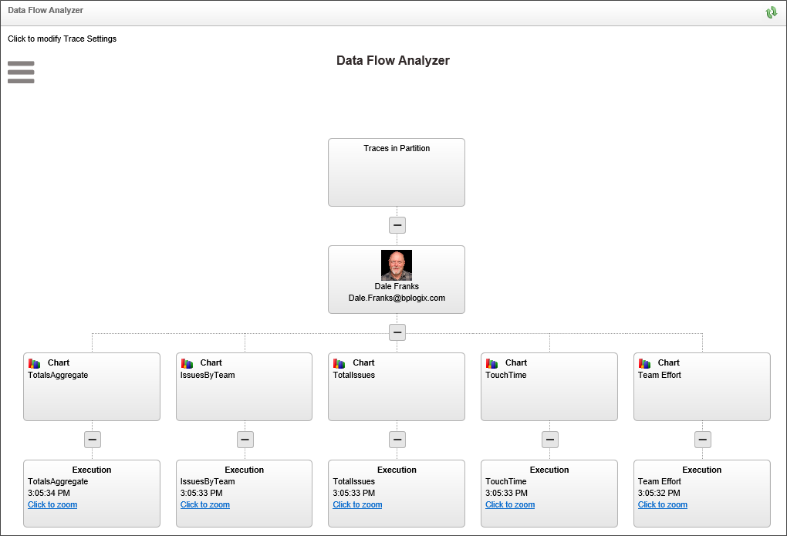
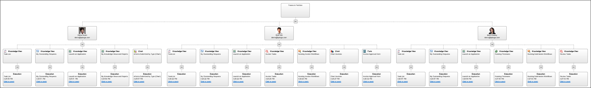

Administrators and implementers using Process Director v4.53 and higher have access to a general data viewer called the Data Flow Analyzer (DFA). The DFA enables you to track the data being used by Business Values, Knowledge Views, Business Rules, etc., so that you can see how the system retrieves data, and what data is retrieved by a particular object. The DFA assists administrators and implementers in testing and troubleshooting data calls made by Process Director objects.
By default, access to the DFA is exposed to Administrators via a navigation button in the Admin User workspace. Administrators can, at their discretion, add the DFA access button to other workspaces, such as those used by process implementers and testers.

Clicking the Data Flow Analyzer button will open the DFA in a new browser window.
To configure the DFA, click on the Menu Icon in the DFA screen. To refresh the traces, click on the Refresh icon in the upper right corner of the DFA window.

Clicking the Menu icon opens the configuration menu for the DFA. Administrators can view data flows for
Non-administrative users can only track the data flows that they initiate, i.e. data flows for the Current User.

Clicking the Clear All Traces button will erase all of the currently visible tracking information, while clicking the Turn Tracing Off button will stop all data tracking.
The DFA operates automatically. Any time you run an object that is tracked by the DFA, a Trace for that object will appear in the DFA window after you refresh the window by clicking the Refresh icon. In the example below, clicking the Test Query button in a Business Value will result in a trace diagram similar to this:

The trace appears as a tree that starts at the top with the Traces in Partition object. the second level of the tree consists of all users who are being traced. In this example, only one user is being traced. At the next level of the tree, the individual objects that have been traced will appear. Each traced object will then have an Execution box below it that displays the name, execution time, and a Click to Zoom link to display the details about the trace. In this case, we want to look at the Business Value that we tested, so if we click the Click to Zoom link for the Training - Vendors Business Value, the DFA will zoom to that node, and display the Business Value that was called by the form. We can exit the zoom by clicking the Return to Main button.

We can also view the details of the Training - Vendors Business Value by clicking on the Training - Vendors node.

On this details screen, we can see the SQL Command that generated the query, the Parameters, if any, that were used by the Business Value, and a table containing the records that were returned by the Business Value.
The more complex the object, the more complex the trace will be in the DFA. For instance, let's say that we start the DFA, and open a Dashboard that contains several Charts.

When we generate this Dashboard, the charts, with all of their underlying Business Values also run, which results in a trace stack that looks like this:

Each chart in the tree has a chart node below the user node. Below that, each chart node has an execution node that points to the underlying Business Value. You can zoom into each execution node to see the Business Value and the data it returns, just as we did in the first example above.
The Trace stack grows dynamically, so each time you perform another data operation, more traces are added. Similarly, if you choose to trace the entire system as an administrator, and choose to trace all users, you're trace stack can become very large, very quickly, on a busy system. In the example below, we can see the stack trace generated by just three users in a few minutes.

You can zoom in or out of the trace, enabling you to view close-ups of different sections of the trace stack, by using the scroll wheel on your mouse, or by clicking the [CTRL] + [+] or [CTRL + [-] keys on the keyboard. If you're zoomed in, you can use the horizontal and vertical scroll bars of the browser windows to move around and view different areas of the tree in your Trace stack.